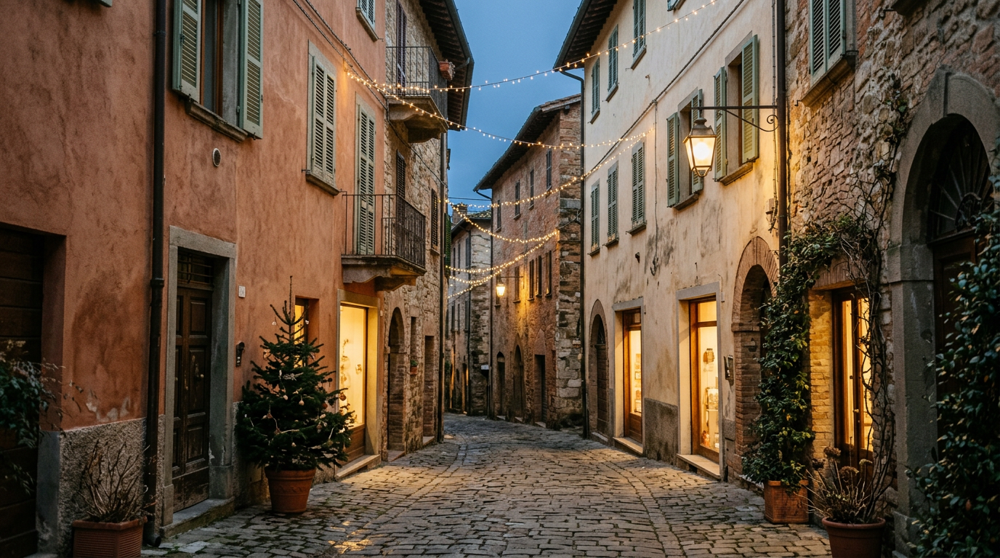

Natale a Castel Gandolfo — presepi, mercatini, luci.

Il dicembre di Castel Gandolfo non è quello delle grandi città: niente folle, poche luci ben messe, una piazza barocca che diventa il salotto del borgo. Questa guida separa ciò che è già certo per il 2026 da ciò che la tradizione degli ultimi anni lascia prevedere, in attesa del programma ufficiale del Comune. Un mese ideale per chi cerca il borgo nella sua dimensione più quotidiana, tra la messa in parrocchia, una passeggiata sul lungolago deserto e un caffè in piazza.
Già aperto: la Natività Barberini
Dal 12 novembre il Palazzo Apostolico espone “La luce del Natale”, un arazzo seicentesco con la Natività scelto dai Musei Vaticani e dalla Direzione delle Ville Pontificie per le feste (Musei Vaticani). Lo commissionò Urbano VIII alla manifattura Barberini nel 1635: tessuto tra settembre 1635 e febbraio 1636 “con oro seta e stame”, su disegno che gli inventari attribuiscono a Pietro da Cortona, era destinato alla cappella papale, probabilmente la Sistina, come fondale del baldacchino dietro l'altare, accompagnato da sei pendagli; in alto, gli angeli reggono un cartiglio con le parole “Gloria in excelsis Deo” (Musei Vaticani). Un legame perfetto con il borgo: Urbano VIII è il papa che inaugurò i soggiorni a Castel Gandolfo, come abbiamo raccontato in Primavera 1626.
L'arazzo è incluso nel biglietto del Palazzo Papale e ne segue gli orari (Musei Vaticani). Prima di partire controllate il calendario ufficiale del Palazzo (Musei Vaticani): il 7 dicembre, per esempio, i Musei Vaticani segnalano la chiusura del Polo museale di Castel Gandolfo dalle 14.30 (Musei Vaticani).
Dal 5 al 12 dicembre: cinema e pace
Torna per la seconda edizione l'Hallelujah Film Festival, promosso dall'associazione The Artist Club Italia con il sostegno del Ministero della Cultura: una settimana di proiezioni, incontri e testimonianze tra la chiesa di San Tommaso da Villanova, il Borgo Laudato si', il Centro Mariapoli e la Scuola Paolo VI. Il tema è la dignità umana di fronte all'intelligenza artificiale, nel solco dell'enciclica Magnifica Humanitas di Leone XIV; domenica 6 dicembre Monica Guerritore riceverà l'Art and Peace Award (Messaggero Veneto).
Musica nella cripta
La cripta della chiesa berniniana ospita tre concerti alle 19.30: domenica 6 dicembre violino e pianoforte, venerdì 11 “Aspettando Clara!” per clarinetto e pianoforte, domenica 13 la pianista Costanza Principe con Beethoven, Schubert, Liszt e Schumann, a pagamento e senza prenotazione (Castellinforma). Un modo raccolto per vivere l'Avvento, sotto la chiesa progettata dal Bernini, in uno spazio che pochi visitatori conoscono.
“Con oro seta e stame.”Gli inventari papali sull'arazzo della Natività
In piazza: cosa aspettarsi
Il calendario comunale 2026 non è ancora uscito, ma quello dell'anno scorso dà un'idea del ritmo. L'8 dicembre l'accensione ufficiale delle luci con il saluto del sindaco, seguita da una festa in piazza con una cassetta per le letterine a Babbo Natale, un omaggio involontario alla buca delle lettere del 1820; il 14 l'apertura di una mostra di presepi nell'aula consiliare “Marcello Costa”; il 16 il canto di Natale della Scuola Pontificia Paolo VI in Piazza della Libertà; dal 19 al 23 e dal 27 al 29 dicembre i mercatini con casette di legno in piazza; il 31 il concerto di Capodanno e il 6 gennaio la Befana per i bambini (Comune di Castel Gandolfo).
Il presepe più spettacolare dello scorso Natale non era in piazza ma al Borgo Laudato si': diciassette grandi sculture in argilla a grandezza naturale del maestro messicano Tiburcio Soteno, dalla tradizione ceramica di Metepec, restaurate in Comune dal figlio Israel e benedette il 20 dicembre dal cardinale Fabio Baggio (Comune di Castel Gandolfo). Sapremo presto se il 2026 riserverà un'altra sorpresa simile.
Consigli pratici
Le giornate sono corte: arrivate in mattinata per il Palazzo e il belvedere, e restate fino al tramonto, quando la piazza si accende. Per la cena, le fraschette di Ariccia sono a pochi chilometri. Per arrivare senza auto e scegliere dove dormire, trovate tutto nelle pagine Come arrivare e Dove dormire. Aggiorneremo la pagina Eventi appena il Comune pubblicherà il programma 2026.